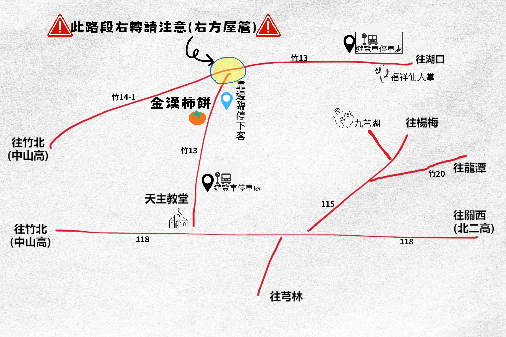

交通資訊
園區地址
30542 新竹縣新埔鎮旱坑路一段501號（金漢柿餅教育農園）
自行開車
國道一號「竹北交流道」下 ➜ 經由 118 縣道往新埔鎮方向 ➜ 轉入竹13線鄉道行駛約2公里即可抵達。
國道三號「關西交流道」下 ➜ 經由 118 縣道往新埔鎮方向 ➜ 轉入竹13線鄉道行駛約2公里即可抵達。
園區內外皆設小型停車場。
柿餅專業區內設有 2 個 遊覽車專用停車場。

大眾運輸
高鐵：
高鐵新竹站 ➜ 搭乘新竹客運至新埔 ➜ 騎乘YouBike微笑單車進入柿餅專業區。
台鐵：
台鐵竹北站/新竹站 ➜ 搭乘新竹客運至新埔 ➜ 騎乘YouBike微笑單車進入柿餅專業區。
YouBike微笑單車
高鐵/高鐵：
到站後可直接搭乘計程車前往金漢柿餅，但本園區所在位置距離市區稍遠，回程的計程車不好安排。本園區會盡力協助安排車輛。
← 回首頁